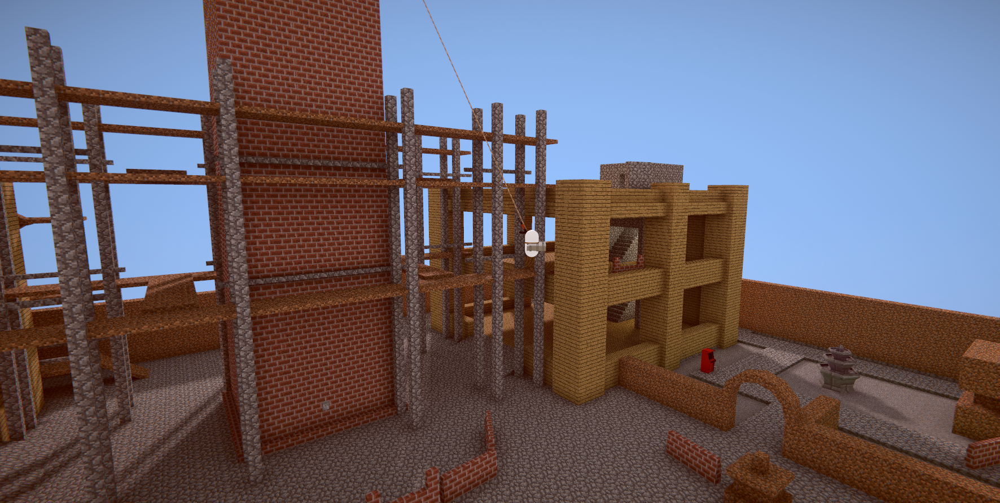
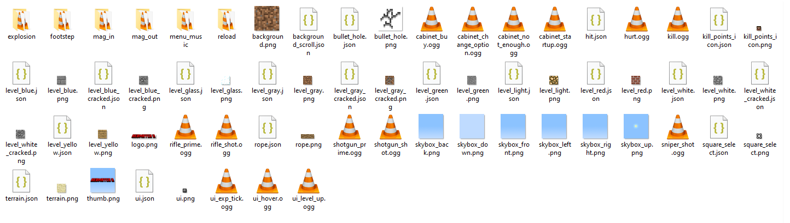

A resource pack is a collection of files which replace things already in the game. In Redmatch 2, resource packs can replace textures and sounds.
You can get resource packs on the Steam Workshop. Click the green plus button or the green subscribe on anything you like to automatically download it (it could take a bit to download so be patient).
You can make your own resource pack by creating a folder and filling it with various files.

Any files in your resource pack folder will replace the ones with the corresponding name in-game. For example, logo.png replaces the Redmatch 2 logo in-game.
The texture files (end in .png) you can replace are:
background
bullet_hole
kill_points_icon
level_blue
level_blue_cracked
level_glass
level_gray
level_gray_cracked
level_green
level_light
level_red
level_white
level_white_cracked
level_yellow
logo
relax_poster
rope
skybox_back
skybox_down
skybox_front
skybox_left
skybox_right
skybox_up
square_select
terrain
thumb
ui
win_or_die_poster
work_is_family_poster
your_job_poster
The audio files (end in .ogg or .wav) you can replace are:
bullet_flyby
cabinet_buy
cabinet_change_option
cabinet_not_enough
cabinet_startup
explosion
footstep
hurt
kill
mag_in
mag_out
menu_music
reload
rifle_prime
rifle_shot
shotgun_prime
shotgun_shot
sniper_shot
ui_exp_tick
ui_hover
ui_level_up
unsuccessful_hit
You can also use a folder of audio files with the same name, and the game will choose a random audio file to play out of the folder (ui_ sounds do not support this).
JSON files can optionally be used to customize various aspects of the files you provide.
These are the optional JSON parameters:
filterMode can be Point, Bilinear, or Trilinear
{
"filterMode": "Point",
"metallic": 0,
"smoothness": 0,
"tiling": { "x": 1, "y": 1 }
}
filterMode can be Point, Bilinear, or Trilinear
{
"filterMode": "Point",
"border": [2, 3, 2, 2],
"borderWidth": 3
}
{
"amount": 200,
"time": 2
}
When you've finished replacing all the files you want, you can upload your folder using the Upload button in-game on the Resource Pack menu.